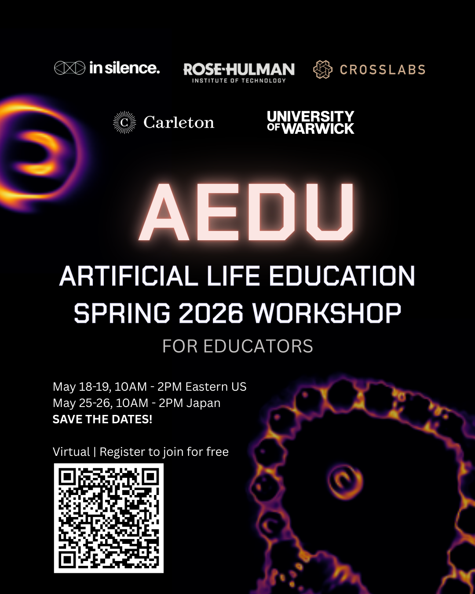

Official Event page (ALife-Edu)
AEdu is free to attend, and you can register at https://forms.gle/YkS3yWknoLdFCAMz6.
AEdu is a virtual workshop for educators in Artificial Life, and we expect participants from all over the world. We'll have sessions on May 18 and 19 from 10:00 to 14:00 EDT (UTC 14:00 to 18:00) to cover western time zones, and for eastern time zones on May 25 and 26 from 10:00 to 14:00 JST (UTC 19:00 to 23:00).
The theme of the first day's session is "Why?", discussing learning objectives and meta-objectives, while the second day covers tips, tricks, and techniques or "How?" to teach ALife. We'll cover a range of topics with a diverse array of speakers and participants from different disciplines, career stages, and roles.
We plan to have lightning talks, discussion groups, constructive activities, and traditional talks (of which you're welcome to propose your own!).